CREATION
Banner Design
Creating our new facebook banner, I wanted to show that human-centered design is integral to our club. Therefore, the vector humans are integral to our design identity.
Moreover, our club is open to everyone, regardless of their background. Despite having "design" in our title, we are open to non-design majors as well. With this in mind, I made sure our banner would speak to people who have different academic and social upbringings.
The temporary banner I made for when I just created the Facebook page
Our banner needed to be a more clear representation of our organization. Therefore, humans needed to be an integral part of the composition. To make them, I started off with rough sketches. After showing the sketches to rest of the DFA officers, they said they all were cute concepts, but to get more helpful feedback, I would need to create higher fidelity concepts. With this in mind, I went digital by sketching on my Surface Pro, and then turning those sketches into vector graphics in Adobe Illustrator.
Paper sketches
Digital sketch and vector graphic process

Sent photos like through Slack to get input from the other officers as I worked
I tried playing around with stickynotes, but decided that they looked too similar to pixels, and there were way to many colors being used.
Ultimately, through using a simple color pallete of purple, orange, and yellow, I mitigated the competition of colors, and unified the composition as a whole.
Final banner!
Photography
Another role of mine is taking photos during our meetings. Every day is an opportunity for me to flex my dynamic composition skills by lining up shots that can be used to create content that represents our club.


 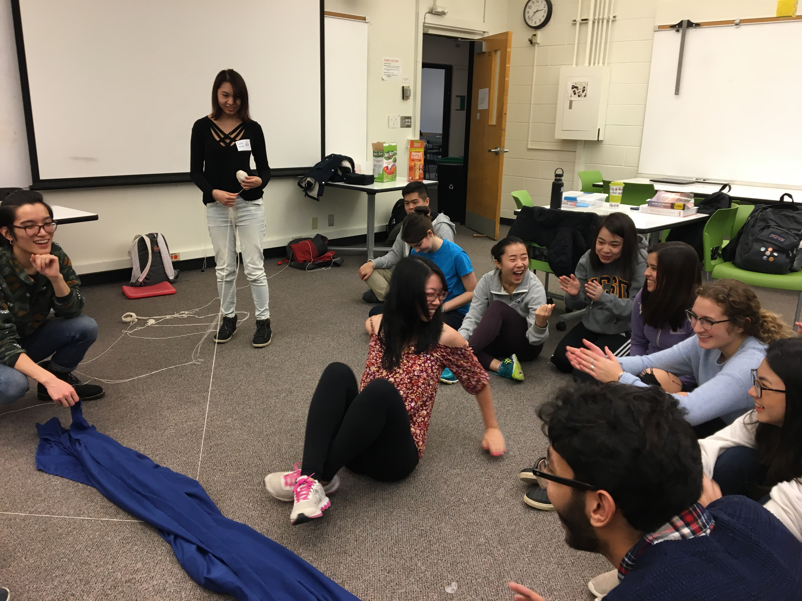
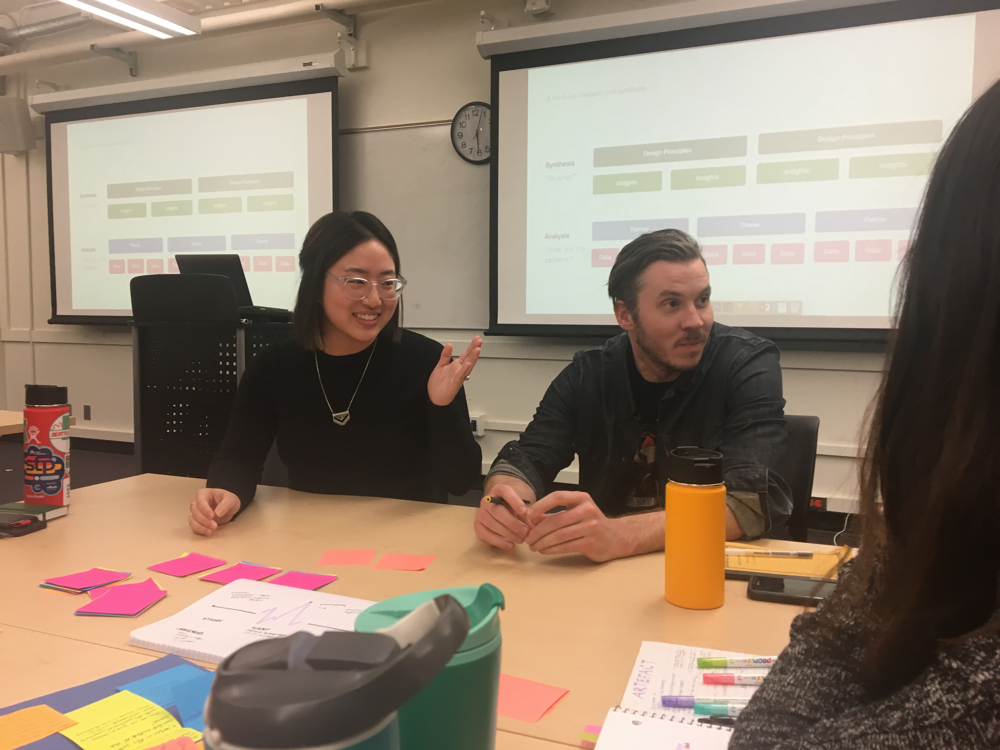
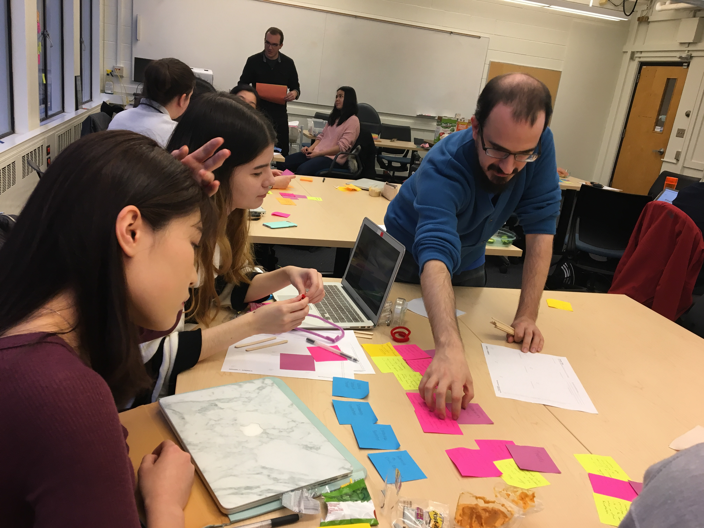
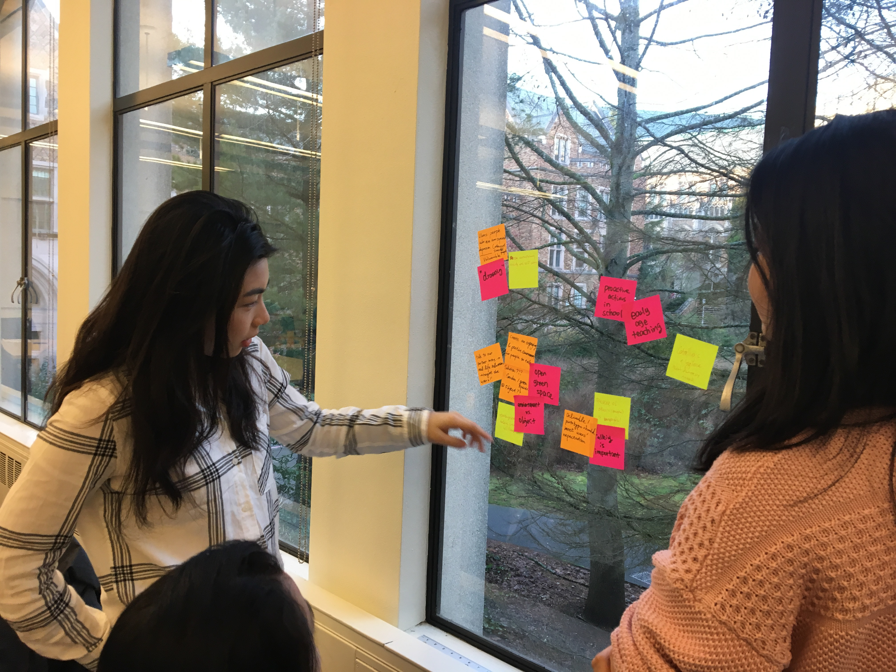
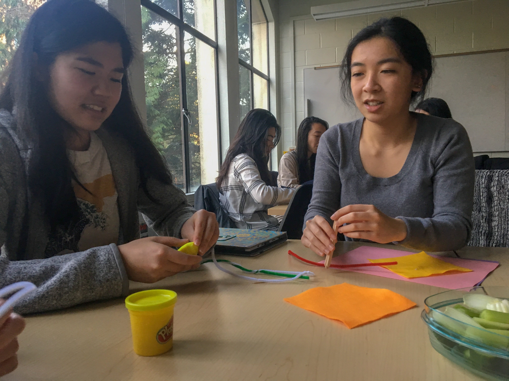
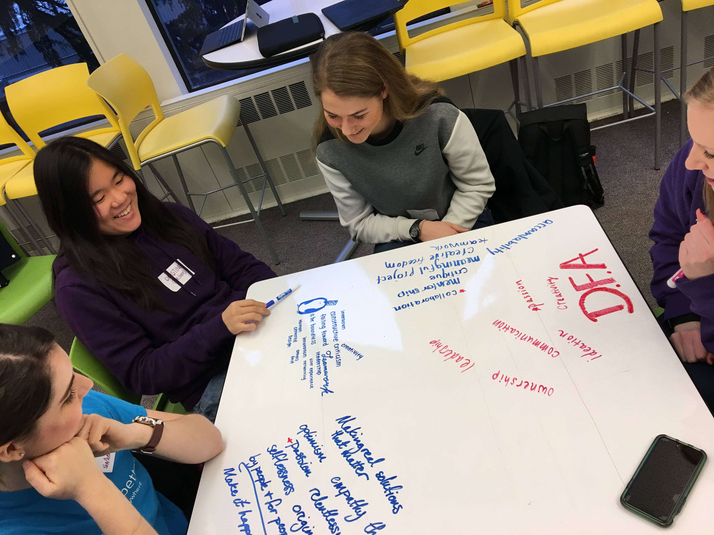
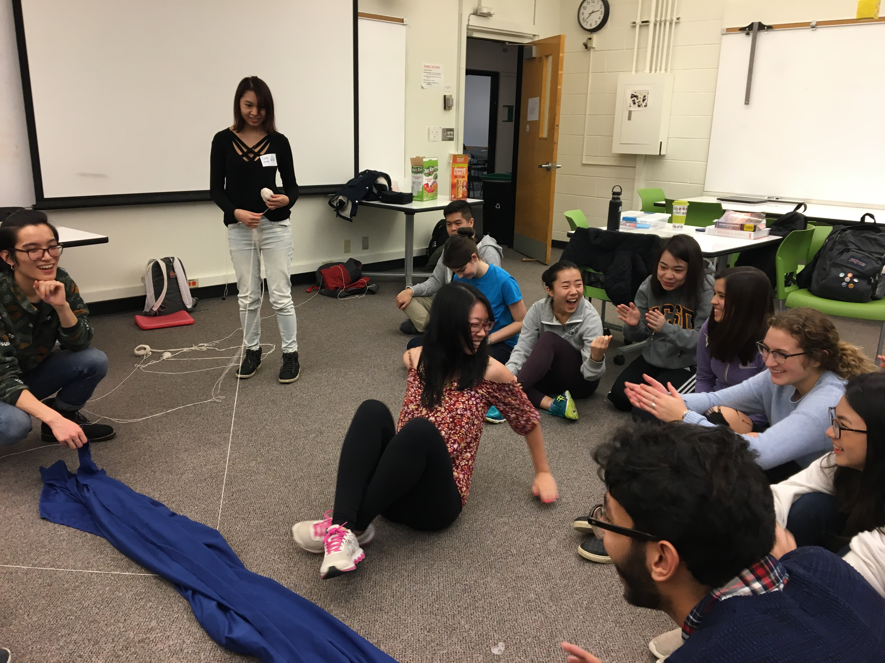
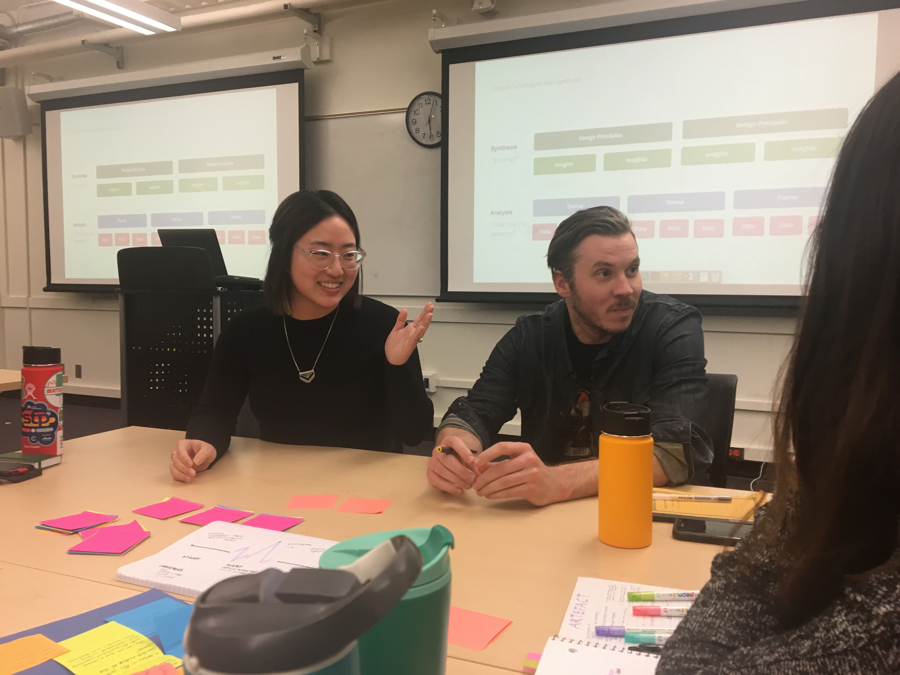
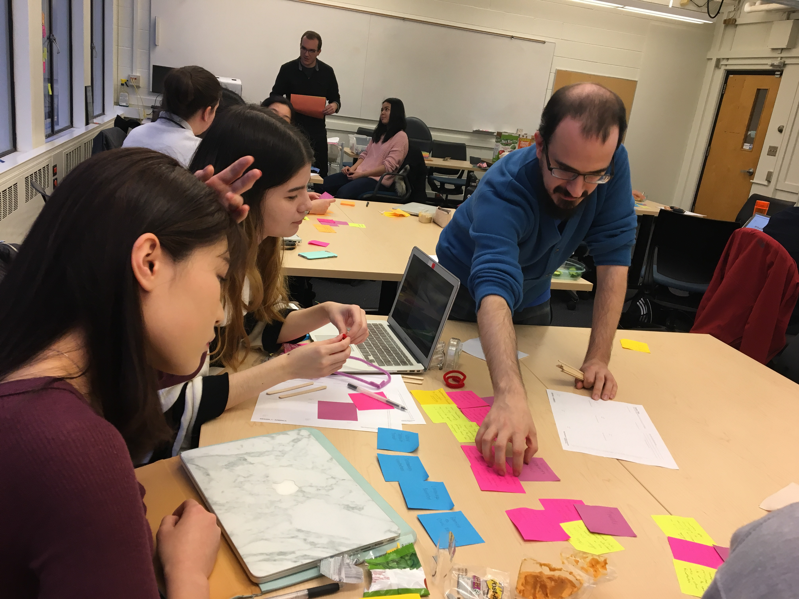
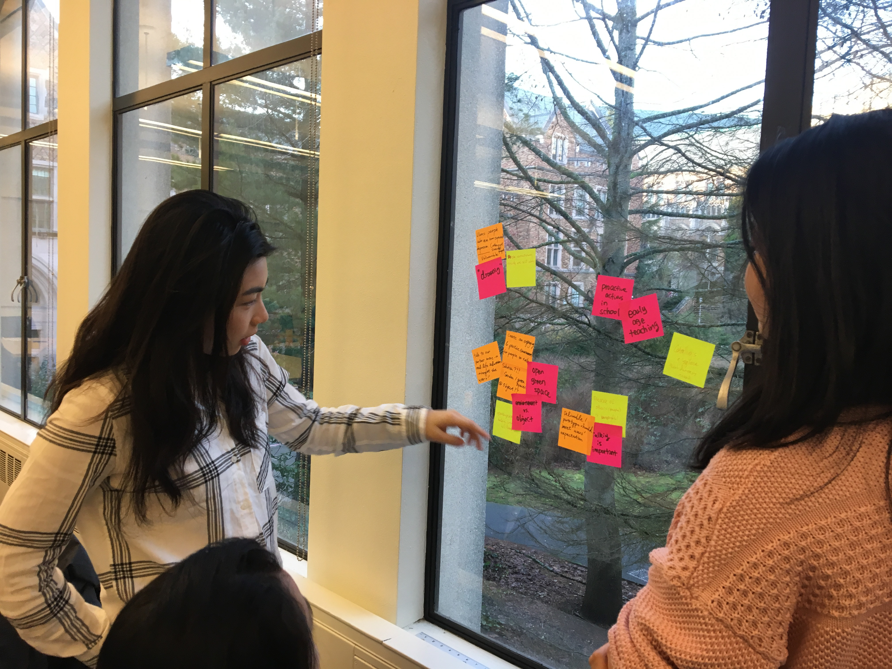
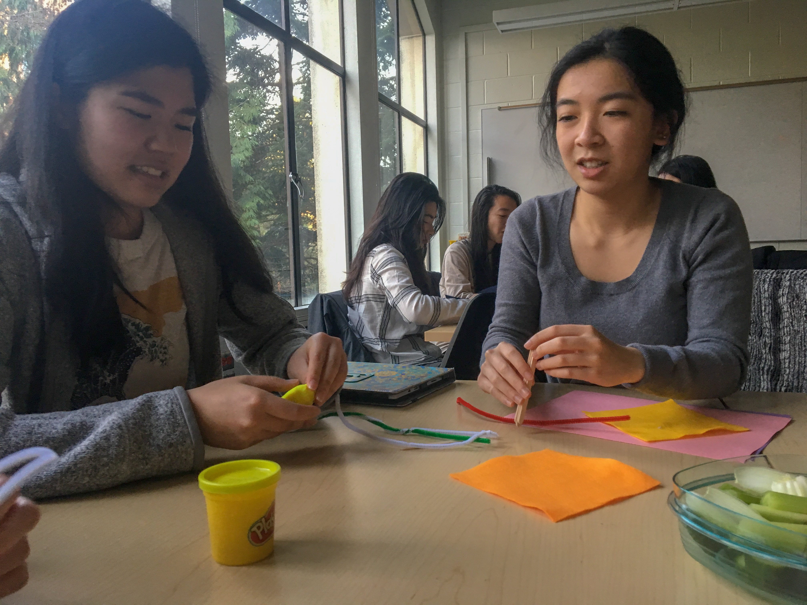
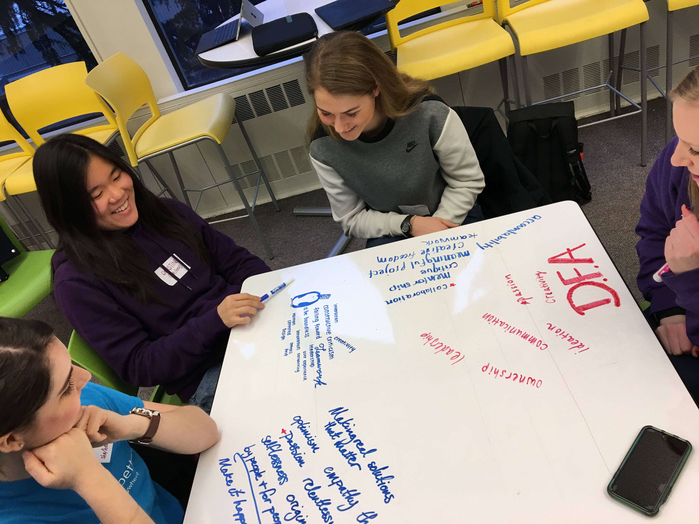
Capturing the growth of our teams and club as a whole, through photos.